Menu Preview
Food and drinks recreated in text, without embedding the menu photos.
- Typed from your current menu references, not image embeds
- Includes both food favourites and bar highlights
- Designed to open as a clean separate PDF document
Tropical Review-Led Restaurant Page
A homepage concept for Club Del Mar with a sun-washed, tropical feel: bold rating cues, warm guest voices and a clear path from inspiration to reservation.
Photo Dump
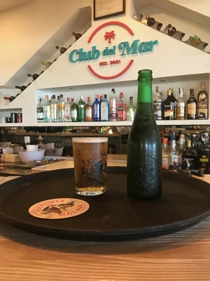
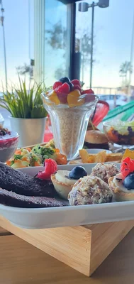
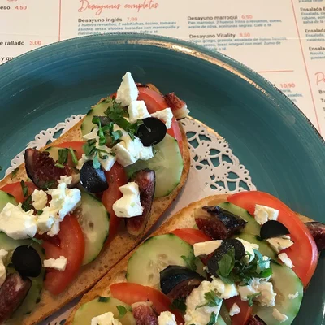
.jpg.webp)
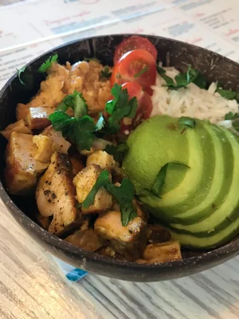
.jpg.webp)
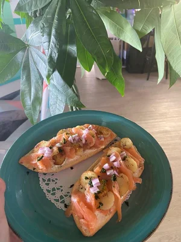
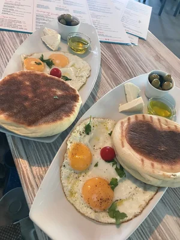
.jpg.webp)
.jpg.webp)
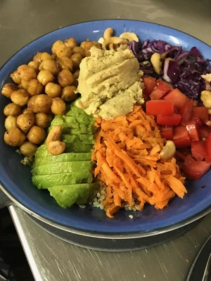
.jpg.webp)
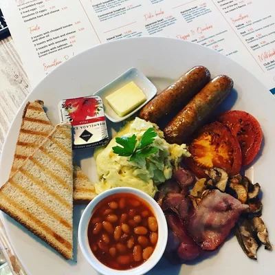
.jpg.webp)
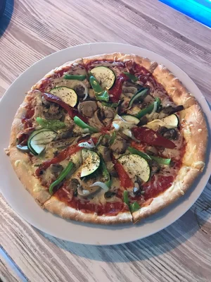
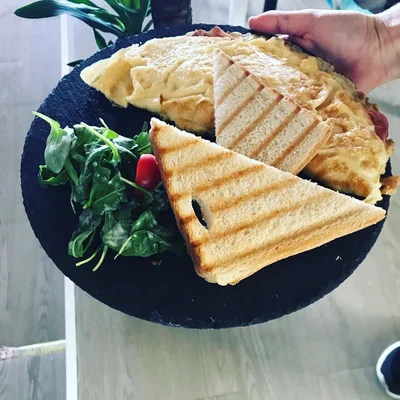
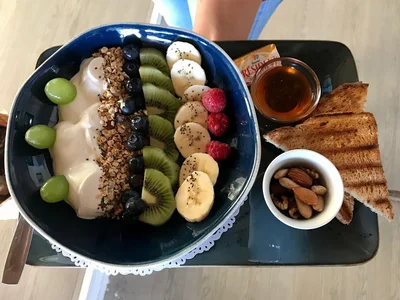
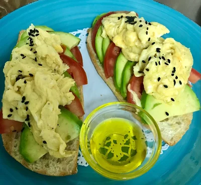
Guests keep mentioning
"
A bright, breezy place with standout service, colorful food and coffee that feels made for slow mornings by the sea.
Inspired by guest sentiment from your reference materialRatings breakdown
Guest voices
Guest from Finland • Couples trip • August 2025
Beautiful place with impressive service, flavorful food and one of those coffee moments that makes a restaurant memorable.
Guest from the UK • November 2024
Helpful staff, generous coffee and a promenade setting that makes the whole experience feel easy and relaxed.
Guest from Norway • October 2024
A consistently enjoyable stop with attentive service, fair pricing and an atmosphere that feels bright, relaxed and social.
Guest from Argentina • February 2023
Varied menu, great drinks and a comfortable atmosphere facing the sea. Perfect reference material for a review-driven homepage.
Visit Club Del Mar
Bloque 1, Local 1, 29640 Fuengirola, Spain
Street parking nearby • promenade-facing seating